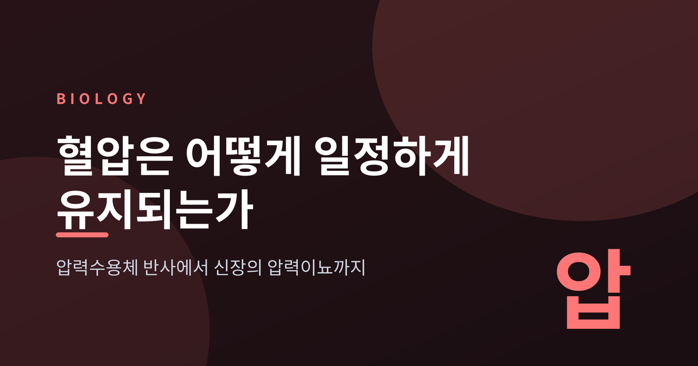
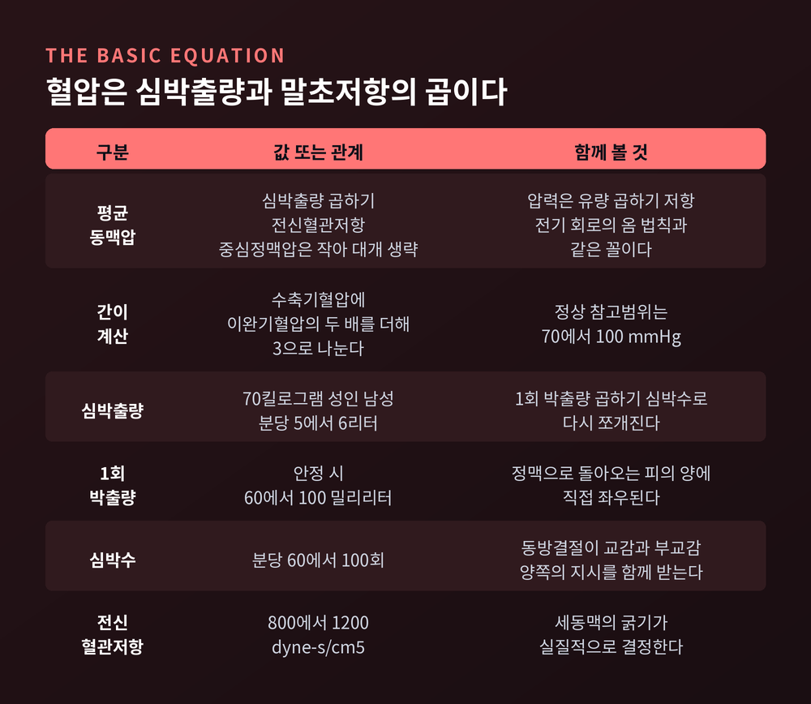
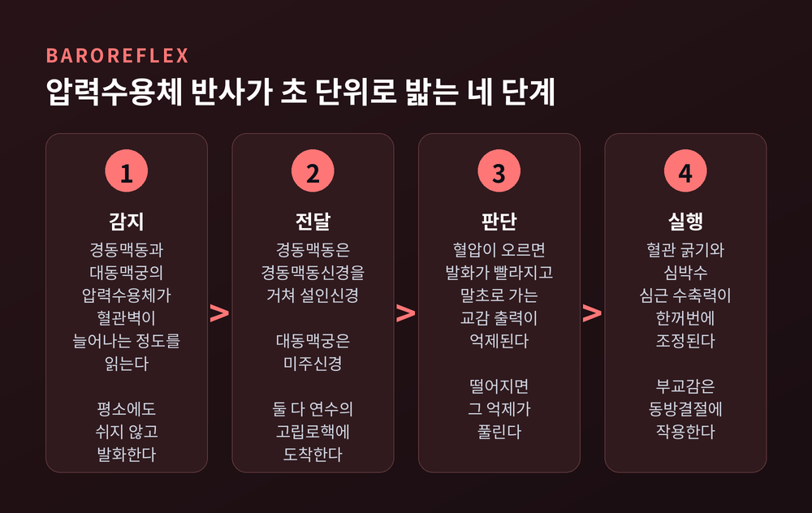
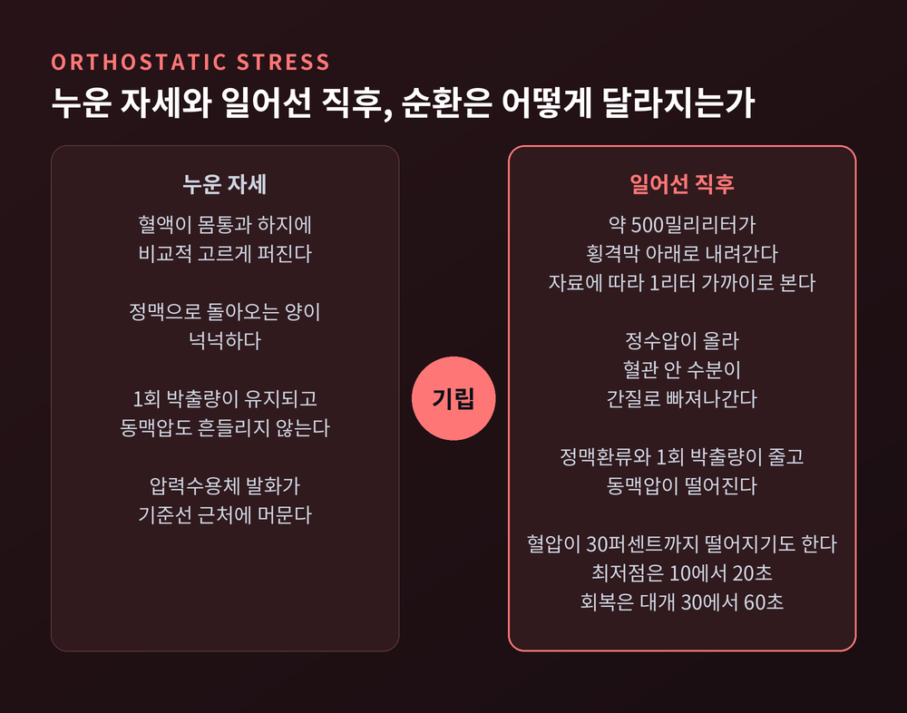
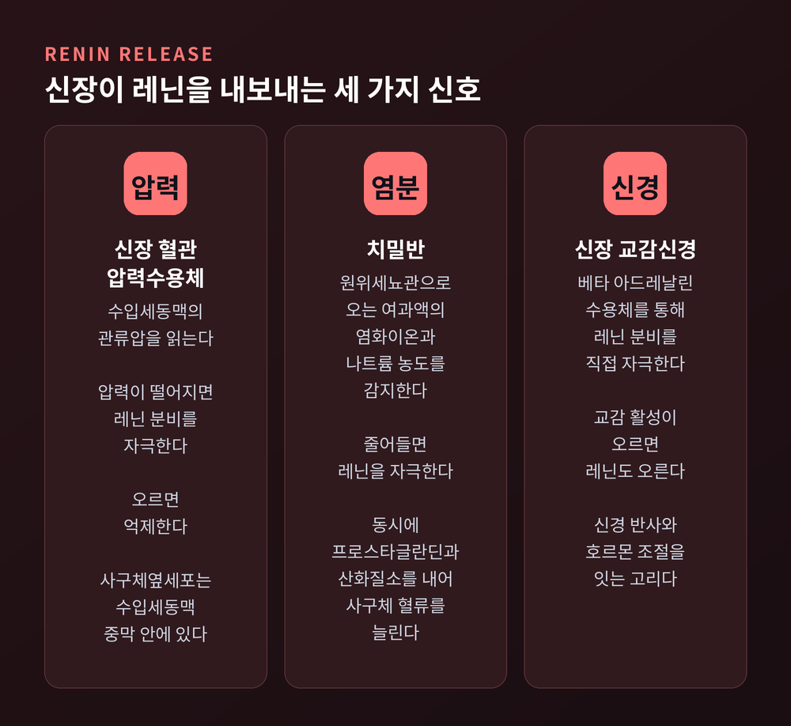
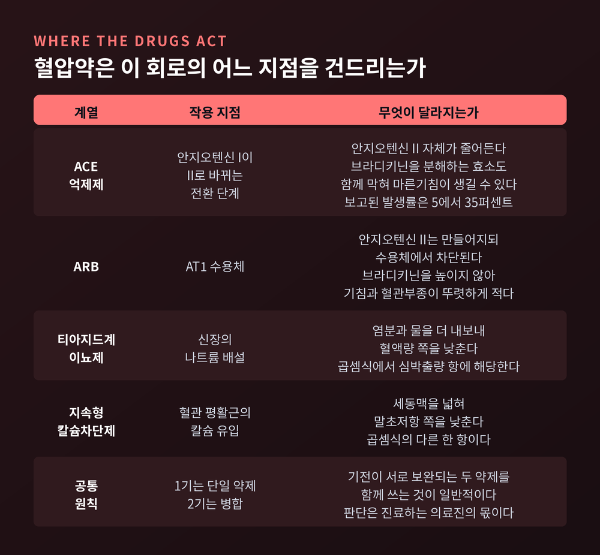

혈압 조절 원리, 압력수용체 반사와 레닌-안지오텐신계가 하는 일
이번 글에서는 혈압이 어떤 원리로 조절되는지 정리해 보겠습니다. 초 단위로 작동하는 신경 반사부터, 분과 시간을 담당하는 호르몬, 그리고 하루를 넘겨 최종 결론을 내리는 신장까지 순서대로 따라가 보려 합니다.

혈압은 곱셈으로 정해집니다
혈압에는 뜻밖에 단순한 뼈대가 있습니다.
평균동맥압은 심박출량과 전신혈관저항의 곱입니다. 여기에 중심정맥압이 더해지지만, 값이 작아 대개 무시합니다. 압력은 유량 곱하기 저항이라는 전기 회로의 옴 법칙과 같은 꼴인 셈입니다.
임상에서 쓰는 간이 계산은 더 간단합니다. 수축기혈압에 이완기혈압의 두 배를 더해 3으로 나눕니다. 정상 참고범위는 70에서 100 mmHg입니다.
각 항목의 정상값도 알아 둘 만합니다. 70킬로그램 성인 남성의 심박출량은 분당 5에서 6리터입니다. 1회 박출량은 안정 시 60에서 100밀리리터, 심박수는 분당 60에서 100회입니다. 전신혈관저항은 800에서 1200 dyne·s·cm⁻⁵ 범위에 놓입니다.
심박출량은 다시 1회 박출량 곱하기 심박수입니다. 그러니 몸이 혈압을 바꿀 때 잡을 수 있는 손잡이는 결국 세 개뿐입니다. 심박수, 1회 박출량, 그리고 혈관저항입니다.

초 단위의 감시자, 경동맥동과 대동맥궁
혈압을 가장 먼저 읽는 곳은 두 군데입니다. 목의 경동맥동, 그리고 심장에서 나오는 대동맥궁입니다.
이곳의 압력수용체는 혈관벽이 늘어나는 정도를 읽는 기계수용체입니다. 심방과 심실, 폐혈관에도 저압 용적수용체가 따로 있습니다.
전달 섬유는 두 종류로 나뉩니다. 굵고 수초가 있는 A섬유는 초 단위의 급격한 변화를 맡습니다. 가늘고 수초가 없는 C섬유는 평상시의 기본 긴장도를 담당합니다.
신호가 가는 길도 다릅니다. 경동맥동의 신호는 경동맥동신경을 거쳐 설인신경을 타고 연수의 고립로핵으로 들어갑니다. 대동맥궁의 신호는 미주신경을 타고 같은 곳에 도착합니다.
중요한 점은 이 신경이 평소에도 쉬지 않고 발화한다는 것입니다. 신호가 없다가 생기는 방식이 아니라, 발화 빈도가 오르내리는 방식입니다.
혈압이 오르면 벽이 더 늘어나고 발화가 빨라집니다. 고립로핵이 더 자극받고, 말초 혈관으로 나가던 교감신경 출력이 억제됩니다. 혈관이 풀리고 저항이 떨어집니다. 동시에 부교감 활성이 동방결절에 작용해 심박수를 낮춥니다.
혈압이 떨어지면 정반대입니다. 발화가 줄고, 억제가 풀리고, 교감신경이 다시 켜집니다. 혈관이 조여지고 심박수와 수축력이 함께 오릅니다.

일어설 때 몸에서 벌어지는 일
이 반사가 매일 시험받는 순간이 있습니다. 자리에서 일어설 때입니다.
누웠다가 일어서면 중력 때문에 약 500밀리리터의 혈액이 흉부에서 횡격막 아래로 내려갑니다. 자료에 따라 많게는 1리터 가까이로 보는 곳도 있습니다. 동시에 정수압이 올라가 혈관 안의 수분이 간질 공간으로 빠져나갑니다.
정맥으로 돌아오는 피가 줄면 1회 박출량이 줄고, 동맥압이 떨어집니다.
여기서 압력수용체가 개입합니다. 교감신경 출력이 반사적으로 올라가 심박수와 혈관저항을 함께 끌어올립니다. 종아리 근육이 수축하며 한 방향 판막을 밀어 정맥환류를 돕는 것도 큰 몫을 합니다.
그래도 짧은 불안정 구간은 남습니다. 초기 기립성 저혈압이라 부르는 이 구간에서는 혈압이 30퍼센트 이상 떨어지기도 합니다. 최저점은 일어선 뒤 10초에서 20초 사이에 옵니다. 이어 반사성 빈맥이 일어나고, 대개 30초에서 60초 안에 회복됩니다.
눈앞이 잠깐 아득해졌다가 곧 돌아오는 그 몇 초가, 실은 이 회로가 작동하는 소리입니다.

분과 시간을 맡는 레닌-안지오텐신-알도스테론계
신경 반사는 빠르지만 오래가지 못합니다. 그다음 층이 호르몬입니다.
주역은 신장의 사구체옆세포입니다. 이 세포들은 수입세동맥의 중막 안에 박혀 있고, 평활근과 비슷한 구조를 가집니다. 여기서 아스파르틸 단백분해효소인 레닌이 나옵니다.
레닌 분비를 켜는 신호는 세 가지입니다.
- 신장 혈관 압력수용체가 수입세동맥의 관류압이 떨어진 것을 감지할 때
- 치밀반이 원위세뇨관으로 오는 염화이온과 나트륨이 줄어든 것을 감지할 때
- 신장 교감신경이 베타 아드레날린 수용체를 통해 직접 자극할 때
한 줄로 줄이면 이렇습니다. 신장은 압력이 낮은지, 소금이 적게 오는지, 교감신경이 켜졌는지를 동시에 읽습니다.
레닌이 나오면 안지오텐시노겐이 안지오텐신 I이 되고, ACE가 이를 안지오텐신 II로 바꿉니다. 안지오텐신 II가 AT1 수용체에 붙으면 다섯 갈래 작용이 한꺼번에 시작됩니다.
혈관이 수축합니다. 부신피질 사구대에서 알도스테론이 만들어집니다. 뇌하수체 후엽에서 항이뇨호르몬이 더 나옵니다. 시상하부가 갈증을 일으킵니다. 그리고 근위세뇨관에서 나트륨을 다시 끌어당깁니다. 근위세뇨관 첫 분절에서 일어나는 나트륨과 수분 재흡수의 40에서 50퍼센트까지를 안지오텐신 II가 담당한다는 보고가 있습니다.
알도스테론은 후기 원위세뇨관과 집합관에서 일합니다. 나트륨과 물을 붙잡고 칼륨을 내보냅니다.
항이뇨호르몬은 두 개의 수용체로 나뉘어 작동합니다. 혈관 평활근의 V1a 수용체는 혈관을 조입니다. 집합관 주세포의 V2 수용체는 아쿠아포린 수분통로를 조절해 물을 되돌립니다. 다만 V1a가 정상 혈압 조절에서 실제로 얼마나 큰 몫을 하는지는 아직 논쟁이 남아 있습니다.

하루를 넘기면 결국 신장이 결정합니다
압력수용체에는 분명한 한계가 있습니다.
새로운 압력이 계속 유지되면 수용체가 그 수준 쪽으로 재설정됩니다. 그래서 이 반사는 단기 변동의 완충 장치로만 유효합니다. 만성 고혈압에서는 반사가 더 높은 혈압을 중심으로 자리를 잡습니다. 순간의 흔들림에는 여전히 반응하지만, 올라간 기준선 자체는 되돌리지 못합니다.
재설정에 걸리는 시간은 자료마다 다릅니다. 압력을 10분에서 15분만 유지해도 재설정이 관찰된다는 연구가 있고, 고전적 서술은 더 긴 시간을 말합니다. 하나로 못박기는 어렵습니다.
장기를 결정하는 것은 신장입니다.
신동맥압이 달라지면 신장은 나트륨과 물의 배설량 자체를 바꿉니다. 압력-나트륨이뇨라 부르는 기전입니다. 아서 가이턴은 이 계통을 무한 이득 시스템이라 불렀습니다.
논리는 이렇습니다. 압력이 높아지면 배출이 섭취를 넘어섭니다. 그러면 체액이 줄고, 그 감소가 압력을 원래 값까지 끝까지 되돌립니다. 중간에서 멈추지 않는다는 점이 무한 이득의 정체입니다.
그래서 장기 혈압의 설정점은 압력-나트륨이뇨 곡선과 하루 염분 섭취량이 만나는 교점에서 정해집니다. 다른 어떤 기전도 이만한 성질이 입증된 적이 없습니다. 장기적으로 혈압을 바꾸려면 결국 이 신장-체액 기전을 건드려야 한다는 결론이 나옵니다.
다만 이 패러다임이 지금도 그대로 유효한지에 대해서는 학계에 논쟁이 있습니다. 표준 설명 틀로 남아 있되, 완결된 정답은 아닙니다.
조절이 무너질 때, 그리고 약이 닿는 자리
두 방향으로 무너집니다.
한쪽은 기립성 저혈압입니다. 누웠거나 앉은 자세에서 일어선 뒤 3분 안에 수축기혈압이 20 mmHg 이상, 또는 이완기혈압이 10 mmHg 이상 떨어지는 상태를 말합니다. 기준에 따라 심박수가 분당 10회 이상 오르는지를 함께 보기도 합니다. 아무 증상이 없을 수도 있고, 어지럼이나 실신으로 나타날 수도 있습니다.
압력수용체가 지나치게 예민해도 문제가 됩니다. 경동맥동 증후군에서는 꽉 끼는 옷깃이나 면도 같은 사소한 자극에도 심한 저혈압과 실신이 옵니다.
다른 한쪽은 고혈압입니다. 2025년 AHA와 ACC 가이드라인은 2017년 이후 첫 대규모 개정으로, 진단과 치료의 기준을 130/80 mmHg로 유지했습니다. 가정혈압 측정과 단일정 복합제의 활용을 함께 강조합니다.
약이 닿는 자리를 앞의 회로 위에 얹어 보면 그림이 선명해집니다.
- ACE 억제제는 안지오텐신 I이 II로 바뀌는 전환 단계를 막습니다
- ARB는 AT1 수용체에서 안지오텐신 II의 작용을 차단합니다
- 티아지드계 이뇨제는 신장의 나트륨 배설을 늘려 혈액량 축을 건드립니다
- 지속형 칼슘차단제는 혈관 평활근에 작용해 말초저항 축을 건드립니다
곱셈식의 두 항 가운데 어느 쪽을 낮추느냐의 차이인 셈입니다.
ACE 억제제에서 마른기침이 잦은 이유도 기전으로 설명됩니다. ACE는 브라디키닌을 분해하는 효소도 함께 억제합니다. 브라디키닌이 기도에 쌓이면서 기침이 생깁니다. 보고된 발생률은 5퍼센트에서 35퍼센트까지 폭이 넓습니다. ARB는 브라디키닌을 높이지 않아 기침과 혈관부종의 빈도가 뚜렷하게 낮습니다.
여기까지는 어디까지나 기전 이야기입니다. 이 글은 개인의 진단이나 처방을 대신하지 않습니다. 복용 중인 약을 바꾸거나 멈추는 판단은 반드시 진료하는 의료진과 상의하시길 권합니다.

정리하면 이렇습니다.
혈압은 하나의 장치가 지키는 값이 아닙니다. 초를 맡는 신경, 분과 시간을 맡는 호르몬, 하루를 넘겨 결론을 내리는 신장이 층층이 겹쳐 있습니다. 층이 여러 겹인 이유는 단순합니다 — 어느 하나가 흔들려도 무너지지 않기 위해서입니다.
그래서 혈압이 안정적이라는 말은 아무 일도 일어나지 않는다는 뜻이 아닙니다. 오히려 그 반대입니다.
지금 이 문장을 읽는 동안에도 목의 어느 지점에서는 초당 수십 번의 계산이 조용히 진행되고 있습니다.